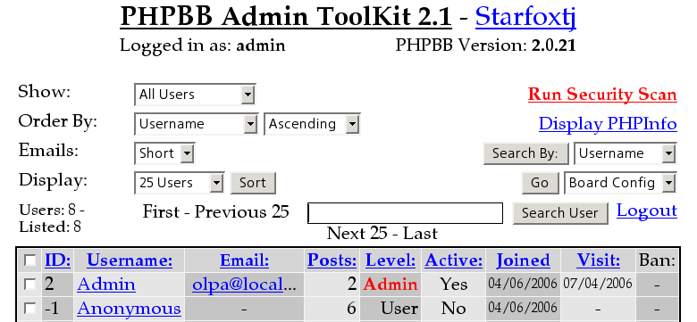

Curing the forum
Earlier or later, protection will fail, and you'll get a lot of spam. How are you going to delete hundreds of users and postings?
To delete users, install PHPBB Admin ToolKit. Download it, unpack, find the file Instructions.txt inside and follow the instructions.

PHPBB Admin ToolKit
The toolkit can delete several users at once. Unfortunately, it can't delete their postings. Instead, it only changes the text to “DELETED”. But it wasn't a problem for me — I had only few spam posts.
In grand total, I can't give a good advice. Visit the phpBB and phpBBHacks sites and search for “mass delete”.
I'd like to mass-delete posts from the search page, but I haven't found such mod. Write me if I missed one.
Next: Quick purging
Prev: Spam words
Home: phpBB Antispam HOWTO